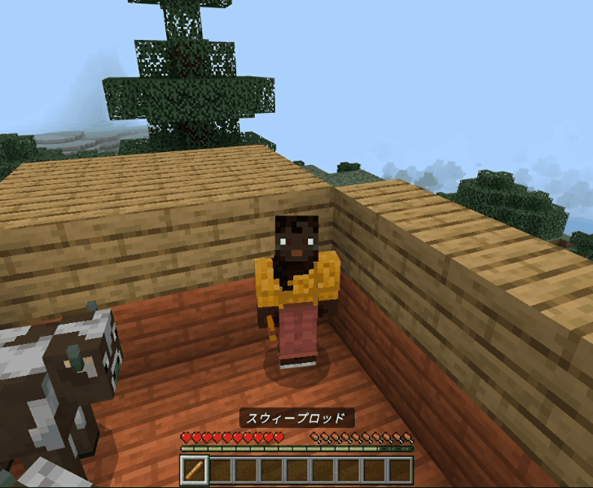
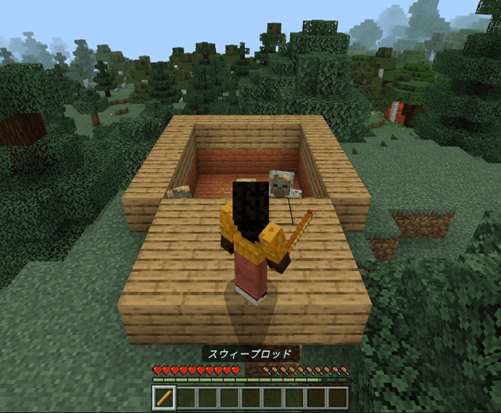
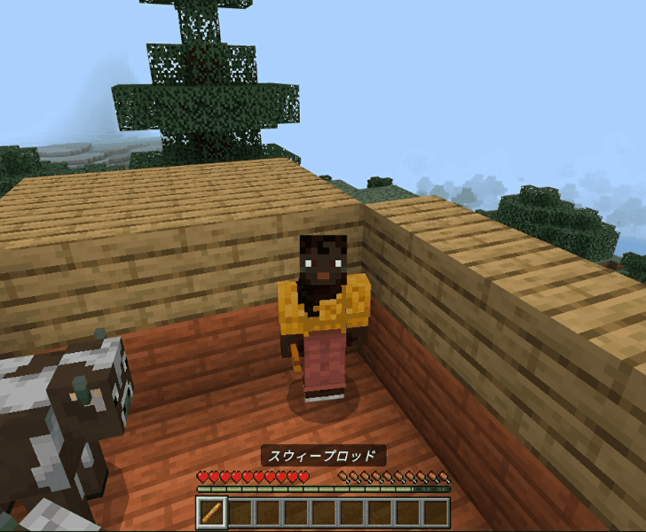
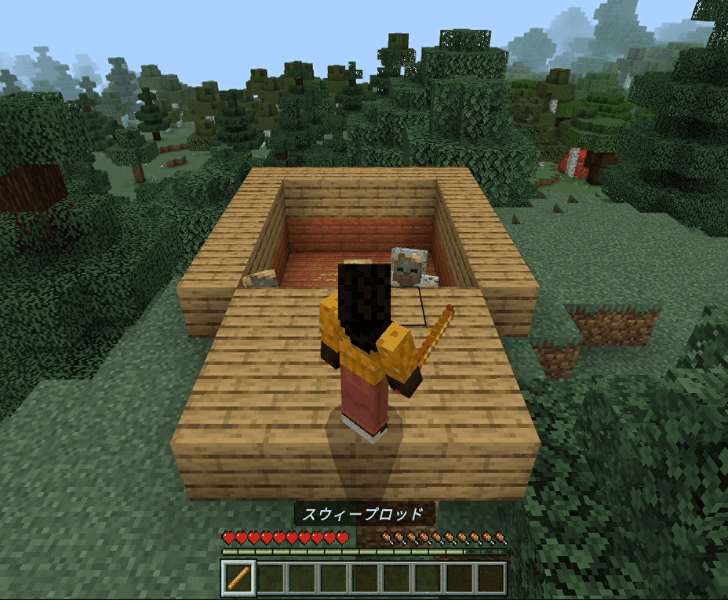
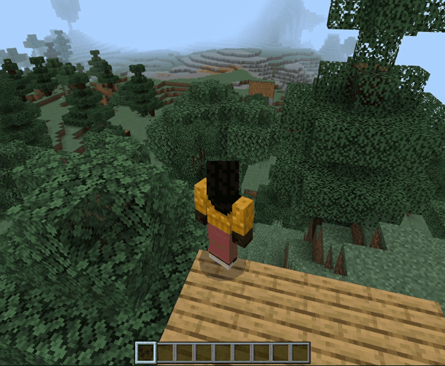
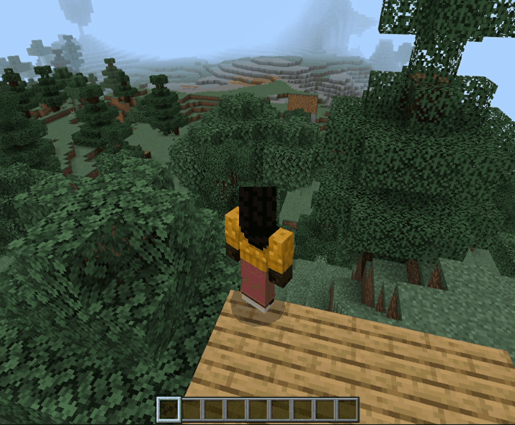

【スウィープロッド（範囲攻撃）】
はじめに
以下のように「スウィープロッド」をメインハンドに持った状態で「ダッシュ＋スニーク」操作を実行する事で範囲攻撃が発動します。

射程距離は５ブロックで、発動時に範囲内にいるモブに大ダメージを与えます。
ダメージ付与ポイントは現在１５ポイントに設定していますので牛や羊などのモブは一撃で倒せます。
対ハスクの場合は２回の連続攻撃で倒せます。
以下の２回目の攻撃のように空中でも発動します。


射程距離は５ブロックで、発動時に範囲内にいるモブに大ダメージを与えます。
ダメージ付与ポイントは現在１５ポイントに設定していますので牛や羊などのモブは一撃で倒せます。
対ハスクの場合は２回の連続攻撃で倒せます。
以下の２回目の攻撃のように空中でも発動します。

「スウィープロッド」の取得
本環境のビヘイビアパック／リソースパックなどのアドオンパックを適用しておけば、以下の方法でユニークアイテムとして「スウィープロッド」が手に入ります。
▶ネットショップ

ショップで購入する場合
以下のショップで購入できます。▶ネットショップ
コマンドで取得する場合
以下はワールドオーナーやシステム組み込み用としてコマンドで取得する方法です。
サーバー側の実装
今回は二段ジャンプの実装でも使っていた"PlayerTravelled"というサブスクライブイベントを使用しています。
※サブスクライブイベントの処理内容については>> こちらでご紹介しています。
スニーク or ダッシュ時に発生するイベントデータの形式
注意しないといけないのが、この"PlayerTravelled"はイベントが発生した時に１回だけ発行されるわけではありません。
プレイヤーの移動距離に応じて複数回イベントが発生しています。
イベントを処理するための任意のコマンド名を以下のファイルへ定義します。
app/CommandUnits/CommandQueueEnumForMinecraft.php
コマンド名を以下の場所へ追加して利用可能にします。
app/CommandUnits/CommandForMinecraft.php
コマンド名と処理（関数）の関係を以下のメソッドへ追加して紐づけを行います。
app/CommandUnits/CommandForMinecraft.php
受信したイベントデータをコマンド名へ変換する処理を以下のコマンドディスパッチャーへ追加します。
app/InitClass/InitForMinecraft.php
コマンド名に紐づけた以下の処理（関数）を実装します。
app/CommandUnits/CommandForMinecraft.php
travelMethodの値（7:スニーク、8:ダッシュ）をみてそのイベントがスニークなのかダッシュなのかを判断できるようになっています。※サブスクライブイベントの処理内容については>> こちらでご紹介しています。
スニーク or ダッシュ時に発生するイベントデータの形式
{
"body":
{
"isUnderwater":<ブール値>,
"metersTravelled":<数字>,
"newBiome":<数字>,
"player":
{
"color":<16進数？>,
"dimension":<数字>,
"id":<数字>,
"name":<文字列>,
"position":
{
"x":<数字>,
"y":<数字>,
"z":<数字>
},
"type":<文字列>,
"variant":<数字>,
"yRot":<数字>
},
"travelMethod":7（スニーク） or 8（ダッシュ）
},
"header":
{
"eventName":"PlayerTravelled",
"messagePurpose":<文字列>,
"version":<数字>
}
}
注意しないといけないのが、この"PlayerTravelled"はイベントが発生した時に１回だけ発行されるわけではありません。
プレイヤーの移動距離に応じて複数回イベントが発生しています。
キューとステータスUNITの登録
イベントを処理するための任意のコマンド名を以下のファイルへ定義します。
app/CommandUnits/CommandQueueEnumForMinecraft.php
case PLAYER_DASH = 'player_dash';
コマンド名を以下の場所へ追加して利用可能にします。
app/CommandUnits/CommandForMinecraft.php
protected const QUEUE_LIST = [
CommandQueueEnumForMinecraft::PLAYER_DASH->value
];
コマンド名と処理（関数）の関係を以下のメソッドへ追加して紐づけを行います。
app/CommandUnits/CommandForMinecraft.php
public function getUnitList(string $p_que): array
{
$ret = [];
・
・
・
if($p_que === CommandQueueEnumForMinecraft::PLAYER_DASH->value)
{
$ret[] = [
'status' => CommandStatusEnumForMinecraft::START->value,
'unit' => $this->getMinecraftPlayerDashStart()
];
}
return $ret;
}
新規実装箇所
受信したイベントデータをコマンド名へ変換する処理を以下のコマンドディスパッチャーへ追加します。
app/InitClass/InitForMinecraft.php
public function getCommandDispatcher()
{
return function(ParameterForMinecraft $p_param, $p_dat): ?string
{
$minecraft = $p_param->isMinecraft();
if($minecraft === true)
{
・
・
・
if(isset($p_dat['data']['header']['eventName']) && $p_dat['data']['header']['eventName'] === 'PlayerTravelled')
{
$method = $p_param->getTempBuff(['travel_method']);
// 特殊機能のアイテム
if(isset($method) && $method['travel_method'] === 8)
{
if($p_dat['data']['body']['travelMethod'] === 7)
{
$p_param->setTempBuff(['travel_method' => $p_dat['data']['body']['travelMethod']]);
return CommandQueueEnumForMinecraft::PLAYER_DASH->value;
}
}
・
・
・
}
・
・
・
}
}
}
コマンド名に紐づけた以下の処理（関数）を実装します。
app/CommandUnits/CommandForMinecraft.php
protected function getMinecraftPlayerDashStart()
{
return function(ParameterForMinecraft $p_param): ?string
{
$p_param->logWriter('debug', ['MINECRAFT PLAYER_DASH:START' => 'START']);
// 受信データの取得
$rcv = $p_param->getRecvData();
// コマンド送信
$cmd_data = $p_param->getCommandDataForSweepRod($rcv['data']['body']['player']['name']);
$data =
[
'data' => $cmd_data
];
$p_param->setSendStack($data);
return null;
};
}